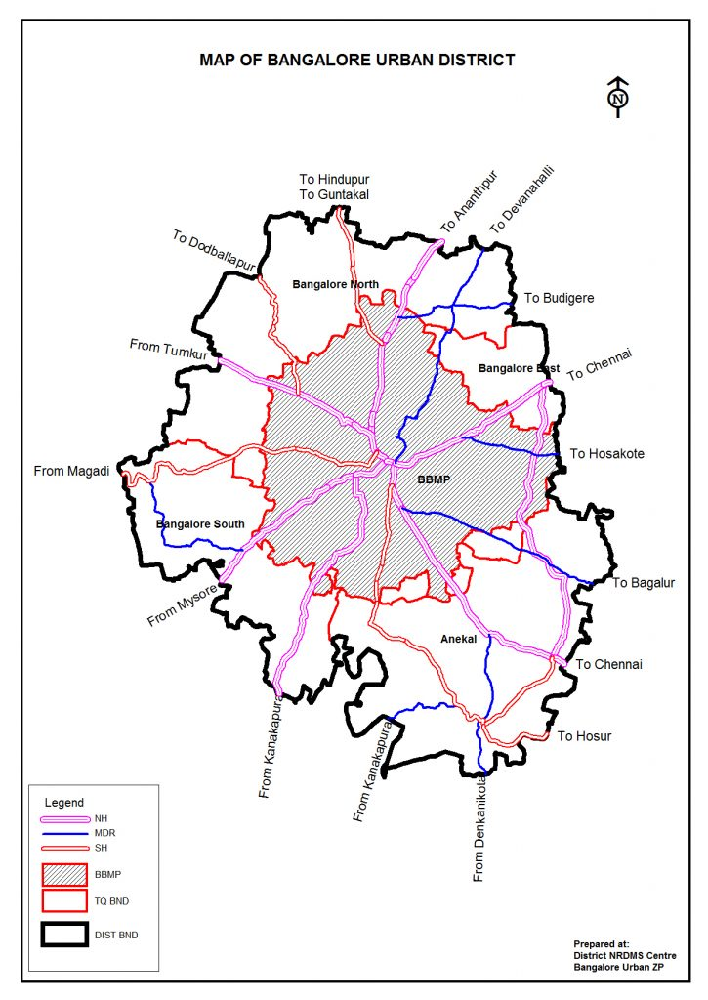

Bengaluru is the capital of the Indian state of Karnataka. It is one of India's largest cities, with a population of over 10 million. Bengaluru is located on a ridge in the Karnataka Plateau, 3,113 feet above sea level. It's a cultural meeting point for Kannada-, Telugu-, and Tamil-speaking peoples.
Bengaluru is known as the "Silicon Valley of India". It's famous for its natural beauty, with many green parks surrounding the city.The city was originally called Bendakaala Ooru, which means "town of boiled beans". The British anglicized the name to Bangalore for easier pronunciation. The name was changed to Bengaluru at the suggestion of Jnanapeeth award recipient Sri U R Anantha Murthy.The cost of living in Bengaluru can be around Rs 40,000-45,000 per month for a family with children.
Beautiful Bidhan Saudha of Bengaluru
About District
Bengaluru Urban District has the distinction of being the Karnataka State Capital. State Legislature and High Court are in its jurisdiction. It is the nerve center of Karnataka State’s Legislative, Judicial and Executive Administration. Bengaluru Urban District comprises five Taluks, namely
Bengaluru North
Bengaluru North(Addl.)
Bengaluru South
Bengaluru East and
Anekal
The district is the Principal Administrative unit below the state level. The Deputy Commissioner, being the head of the District Administration, is perhaps the only officer vested with powers under the largest number of both Central and State Laws. The D.C. office comes in direct contact with the people and people’s representatives at various levels. The office of the Deputy Commissioner apart from having many original works enumerated under different Acts and Rules has got the supervisory and coordinating roles at the district level. Apart from regulatory functions, the Deputy Commissioner guides and coordinates the developmental activities of the district.

Vidhana Soudha is a famous landmark in Bangalore, India. It is the largest legislative building in India and houses the State Legislature and the Secretariat of Karnataka. The building is made of granite and has four stories above ground and one below. It measures 700 by 350 feet on the ground and is 175 feet tall. The architecture includes elements of styles from the mediaeval Chalukya, Hoysala and Vijayanagara empires of Karnataka.The building was built at a cost of Rs 1.84 crore. The foundation stone was laid by then-Indian Prime Minister Jawaharlal Nehru on July 13, 1951.The front of the building has the inscription "Government's Work is God's Work" and its equivalent in Kannada – "sarkarada kelasa devara kelasa".